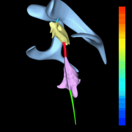

ОНТОГЕНЕЗ НЕРВНОЙ СИСТЕМЫ
Нервная система человека развивается из наружного зародышевого листка – эктодермы. В дорсальных отделах туловища зародыша эктодермальные клетки образуют медуллярную (нервную) пластинку. Последняя вначале состоит из одного слоя клеток, которые в дальнейшем дифференцируются на спонгиобласты (из них развивается опорная ткань – нейроглия) и нейробласты (из них развиваются нервные клетки).
В связи с тем, что интенсивность размножения клеток в различных участках медуллярной пластинки неодинакова, последняя прогибается и постепенно приобретает вид бороздки или желобка. Рост боковых отделов этой нервной (медуллярной) бороздки приводит к тому, что ее края вначале сближаются, а затем срастаются. Таким образом, нервная бороздка, замыкаясь в своих дорсальных отделах, превращается в нервную трубку. Сращение первоначально происходит в переднем отделе, затем срастаются задние, каудальные, ее отделы. После сращения дорсальных отделов нервная трубка отшнуровывается от эктодермы и погружается в мезодерму.
В период образования нервная трубка состоит из трех слоев. Из внутреннего слоя в дальнейшем развивается эпендимальная выстилка полостей желудочков мозга и центрального канала спинного мозга, из среднего – серое вещество мозга. Наружный слой, почти лишенный клеток, превращается в белое вещество. Вначале все стенки нервной трубки имеют одинаковую толщину. Впоследствии более интенсивно развиваются боковые отделы трубки, вентральная и дорсальная стенки отстают в росте. В результате такого неравномерного развития на поверхности мозга образуются борозды. Сначала образуются вентральная и дорсальная продольные срединные борозды будущего спинного и продолговатого мозга. Эти борозды делят мозг на две половины – правую и левую. Позже в каждой половине образуются латеральные (боковые) борозды.
Внутри нервной трубки обособляется серое и белое вещество. Серое вещество располагается внутри и делится на части, получившие название столбы (на поперечном срезе - рога). Белое вещество располагается снаружи, окружая серое.
Одновременно с развитием нервной трубки происходит выселение из нее чувствительных нейронов. Они образуют по обе стороны нервной трубки туловищные спинномозговые узлы (спинальные ганглии), расположенные посегментно. В головном конце такие выселенные нейроны образуют чувствительные узлы черепных нервов. Но эти чувствительные клетки не теряют связи с головным и спинным мозгом. Так, центральные отростки нейронов спинальных ганглиев прорастают по направлению к нервной трубке и образуют задние (чувствительные) корешки спинномозговых нервов.
Отростки нейронов, расположенных в передних столбах нервной трубки прорастают из нервной трубки наружу, образуя передние (двигательные) корешки.
В головном конце нервная трубка заметно утолщается. Эта расширенная часть служит зачатком головного мозга. Остальные отделы нервной трубки в дальнейшем превращаются в спинной мозг.
На ранних стадиях развития эмбриона нервная трубка простирается по всей длине тела. В связи с редукцией каудальных отделов нервной трубки нижний конец будущего спинного мозга постепенно суживается, образуя терминальную (концевую) нить. Примерно в течение 3 месяцев внутриутробного развития длина спинного мозга равна длине позвоночного канала. В дальнейшем рост позвоночного столба происходит более интенсивно. В связи с фиксацией головного мозга в полости черепа наиболее заметное отставание в росте нервной трубки наблюдается в ее каудальных отделах. Несоответствие в росте позвоночного столба и спинного мозга приводит к тому, что спинной мозг не заполняет всю полость позвоночного канала. Так, у новорожденного нижний конец спинного мозга расположен на уровне III поясничного позвонка, а у взрослого – на уровне I–II поясничных позвонков. Корешки спинного мозга и спинномозговые узлы формируются достаточно рано, рано устанавливается и связь между спинномозговыми нервами и соответствующими межпозвоночными отверстиями. Неодинаковая скорость развития позвоночника и спинного мозга приводит к тому, что корешки удлиняются и изменяют свое направление из горизонтального на косое и даже вертикальное (продольное по отношению к спинному мозгу). Вертикально идущие к крестцовым отверстиям корешки каудальных (нижних) сегментов спинного мозга формируют вокруг концевой нити пучок корешков – так называемый конский хвост.
Головной отдел нервной трубки является зачатком, из которого развивается головной мозг. У 4-недельных эмбрионов головной мозг состоит из трех мозговых пузырей – переднего, среднего и заднего. Из переднего мозгового пузыря в дальнейшем формируется промежуточный и конечный мозг, из среднего – средний мозг, из заднего – продолговатый мозг, мост и мозжечок.
Наиболее сложные превращения в процессе развития претерпевает передний мозговой пузырь (prosencephalon).Из его задней части образуется промежуточный мозг, где наибольшего развития достигают латеральные стенки Они значительно утолщаются и образуют зрительные бугры (таламусы). В дорсальной стенке также появляется слепой непарный вырост, который впоследствии превращается в шишковидное тело, или эпифиз, corpus .В области тонкой нижней стенки образуется еще одно непарное выпячивание, превращающееся в серый бугор, tuber cinereum, воронку, ififundibulum, и заднюю долю гипофиза, neurohypophysis.
Из передней части переднего мозга образуется конечный мозг, telencephalon. Вначале это непарное образование, затем он делится на два мозговых пузыря, из которых развиваются полушария конечного мозга.
Интенсивный рост полушарий приводит к тому, что они постепенно покрывают сверху и с боков не только промежуточный и средний мозг, но и мозжечок. На внутренней поверхности стенок формирующихся правого и левого полушарий, в области их основания, образуется выступ (утолщение стенки), в толще которого развиваются узлы основания головного мозга – базальные ядра. Неравномерный и интенсивный рост стенок пузырей полушарий приводит к тому, что вначале на гладкой их наружной поверхности в определенных местах появляются углубления, образующие борозды полушарий большого мозга. Раньше других появляются глубокие постоянные борозды, и первой среди них формируется латеральная (сильвиева) борозда. При помощи таких глубоких борозд каждое полушарие оказывается разделенным на доли, которые более мелкими бороздами подразделяются на извилины большого мозга.

Рис 4. Кора больших полушарий: 1 - латеральная борозда, 2 - центральная борозда, 3 - теменно - затылочная борозда, 4 - мозжечок.
Наружные слои стенок пузырей полушарий образованы развивающимся здесь серым веществом – корой большого мозга. Борозды и извилины значительно увеличивают поверхность коры большого мозга. К моменту рождения ребенка полушария его большого мозга имеют все основные борозды и извилины. После рождения в различных долях полушарий появляются мелкие непостоянные борозды, не имеющие названий. Их количество и место появления определяют многообразие вариантов и сложность рельефа полушарий головного мозга.
Полость нервной трубки в эмбриогенезе преобразуется в полости мозга. В туловищной части из полости нервной трубки образуется центральный канал спинного мозга. Полости мозговых пузырей превращаются в желудочки мозга. Общая полость ромбовидного мозга преобразуется в IV желудочек, который в задних своих отделах сообщается с центральным каналом спинного мозга и с межоболочечным пространством. В передних отделах в полость IV желудочка открывается водопровод среднего мозга, который является полостью среднего мозга. Полость промежуточного мозга образует III желудочек мозга, который посредством водопровода среднего мозга сообщается с IV желудочком. Непарная вначале полость конечного мозга также подразделяется на две части, каждая из которых сообщается с помощью межжелудочкового отверстия с полостью III желудочка. Полости развивающихся полушарий большого мозга преобразуются в имеющие сложную конфигурацию боковые желудочки мозга.
Желудочек головного мозга.
Все полости мозга заполнены спинномозговой жидкостью, которая вырабатывается сосудистыми сплетениями. Последние образованы капиллярами сосудистой оболочки, непосредственно прилежащей к мозгу.